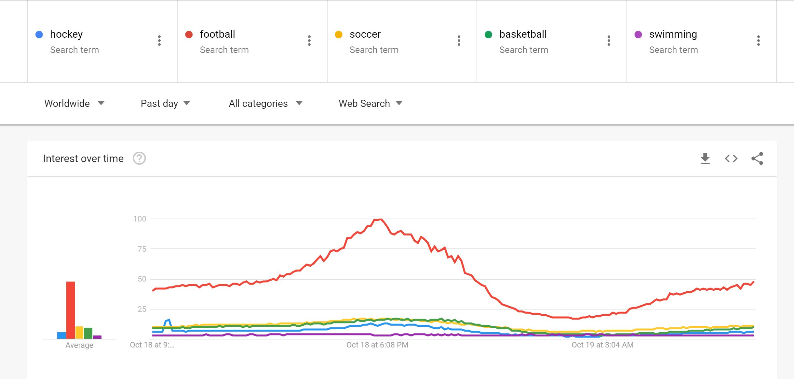
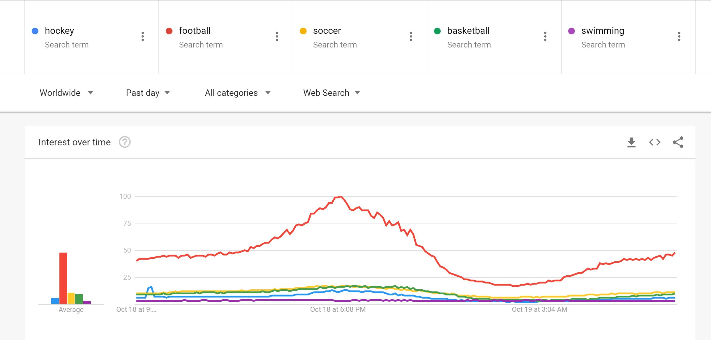

Terms used include: hockey, soccer, football, swimming, basketball.
Trends: 

This piece of art will use information regarding Google Search Trends; searched items will work to create an image.
More frequently searched items will appear larger and brighter, whereas less frequently searched items will appear smaller and duller in appearance.
Each searched term will result in a shape being drawn on the screen. As stated above, if the term is a more frequently searched item, it'll draw a larger and brighter shape,
and a less frequently searched item will create a smaller and duller/more transparent shape.
This net art is building on ideas of data visualization. The shapes will be sized in accordance to one another in regard to how much they are trending compared to one another, and compared to the currently top trending search term.
For my example, I used circles as my shape, and I am using the colour purple.
Terms used include: hockey, soccer, football, swimming, basketball.
Trends: 